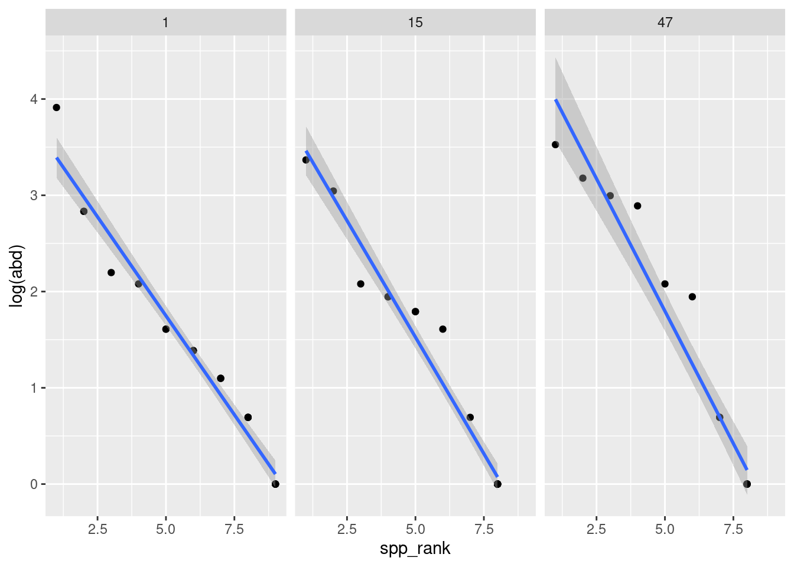

In many ways, ecology is the discipline of replication. Most ecological studies have multiple species, multiple sites, or multiple time points in their study – almost by definition. As a result, our analyses are almost always designed to include replication. The most common tool that people use is the multi-level model (AKA the hierarchical model). These models are populuare, useful, and very flexible; but they have the weakness of being very complex, difficult to interpret, and often difficult to write correctly.
Aside from the technical complexity, there’s also conceptual complexity when ecological data has many dimensions of space, time, species, etc. It can be quite hard to visualize and understand what’s happening. Also, we may have hypotheses that operate at multiple levels. We may have one hypothesis for what happens within any group, for example, across individuals or species, and another hypothesis for what happens across sites or over time.
Enter the secret weapon. The secret weapon is the name Andrew Gelmangives to this simple idea. Instead of conducting one large analysis, divide your data into multiple small groups, fit a model to each small group, and compare one or more summary statistics across groups.
Then we can either analyze the summary statistics in a second study, which is a technique sometimes called “statistics on statistics”, or go on to build a multilevel model. We may even decide that this is a sufficient endpoint for our study.
This is a technique that everyone in this room can use right now and which I can confidently recommend as advice to anybody in college who’s beginning a quantitative analysis project.
This workshop will be divided into 3 parts. First, we’ll do a worked example using the mite data from the package vegan. In the second, we’re going to split into an exercise section where we will look at different examples from some long-term datasets that I’ve found. And third, we will have time to work on our own datasets.
Worked example
Data preparation – Center and scale your predictors!
This example uses the famous mite dataset, collected by Daniel Borcard in 1989 and included in the famous vegan package.
── Attaching core tidyverse packages ──────────────────────── tidyverse 2.0.0 ──
✔ dplyr 1.1.4 ✔ readr 2.1.5
✔ forcats 1.0.0 ✔ stringr 1.5.1
✔ ggplot2 3.5.1 ✔ tibble 3.2.1
✔ lubridate 1.9.3 ✔ tidyr 1.3.1
✔ purrr 1.0.2
── Conflicts ────────────────────────────────────────── tidyverse_conflicts() ──
✖ dplyr::filter() masks stats::filter()
✖ dplyr::lag() masks stats::lag()
ℹ Use the conflicted package (<http://conflicted.r-lib.org/>) to force all conflicts to become errors
library(cmdstanr)
This is cmdstanr version 0.7.1
- CmdStanR documentation and vignettes: mc-stan.org/cmdstanr
- CmdStan path: /home/andrew/software/cmdstan
- CmdStan version: 2.34.1
# combine data and environmentmite_data_long <-bind_cols(mite.env, mite) |> tibble::rownames_to_column(var ="site_id") |>pivot_longer(Brachy:Trimalc2, names_to ="spp", values_to ="abd")
Because we’re ecologists, we’ll do one of the most classic ecological models: a Binomial GLM, modelling the presence or absence of a species based on the water content of the soil.
Where \(x\) is some predictor variable and \(\frac{e^a}{1 + e^a}\) is the logit link function. To keep things simple and univariate, let’s consider only water for \(x\).
First, a quick word about centering and scaling a predictor variable:
I center the predictor by subtracting the mean. This changes the intercept of my linear predictor. It becomes the mean log-odds of occurrance when the water content is average
I divide water content by 100. The dataset has units of grams per Litre of water (see ?vegan::mite.env for more details). This is fine, but I don’t think mites are able to sense differences as precise as a millimeter of water either way. by dividing by 10 I transform this into centilitres, which is more informative.
the x-axis scale has been transformed from “grams per litre” to “centilitres away from average”
there is a ton of variation in how different species respond to water!
The secret weapon: in tidyverse code
We’re going to perform the following steps on these data:
divide the dataset up into different species
fit precisely the same model to each one
extract the coefficients
visualize these
To do this, we’ll be using some handy tricks from the tidyverse, which let us implement a strategy called “split-apply-combine”
Split-Apply-Combine
“split-apply-combine” describes a really general workflow in statistics / data science, which was described my Rstudio’s Hadley Wickham in the paper linked above. The idea is to divide data into groups, transform each, and then put the results together. The Secret Weapon is one example of this approach.
There are many possible ways to do this in practice. We are using a technique here from the tidyverse, which you can read more about here. A for-loop would also work for this kind of problem!
Once again, the two parameters of this model represent:
Intercept The probability (in log-odds) of a species being present at the average water concentration. some species are common, others are rare.
water this is the change in probability (in log-odds) as water increases by one centilitre per litre of substrate.
For the Bayesians
The above is adapted from a tutorial I wrote for a course in Bayesian statistics. If you would like to see how this is done in the Bayesian software Stan, the course notes are here
Practice examples
Here are some exercises that might make good practice for using the Secret Weapon:
The mite.env data has another continuous predictor, SubsDens. Adapt the example above for this variable. Which has stronger effects on species presence-absence: water, or substrate density?
We used the tidyverse to implement the Secret Weapon. This would also work very well in a for-loop! Write a for-loop version of the same workflow.
We did a binomial GLM for presence absence. We could also use a linear model to estimate evenness in each plot, based on a rank-abundance plot, like this:
rank_df <- mite_data_long_transformed |>filter(abd !=0) |>group_by(site_id) |>mutate(spp_rank =dense_rank(desc(abd)))rank_df |>ungroup() |>## drop some sites just for appearancefilter(site_id %in%c("1", "15", "47")) |>ggplot(aes(x = spp_rank, y =log(abd))) +facet_wrap(~site_id) +geom_point() +stat_smooth(method ="lm")
`geom_smooth()` using formula = 'y ~ x'

The slope of these lines is one way to think about evenness – more negative slopes mean a less even community. Use this approach to ask the question: Does evenness change with water concentration?
Take it to a brand-new dataset (or to your own science!)